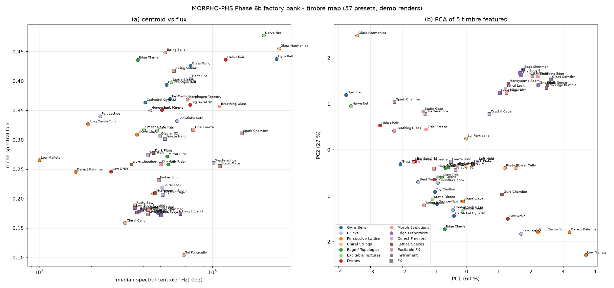
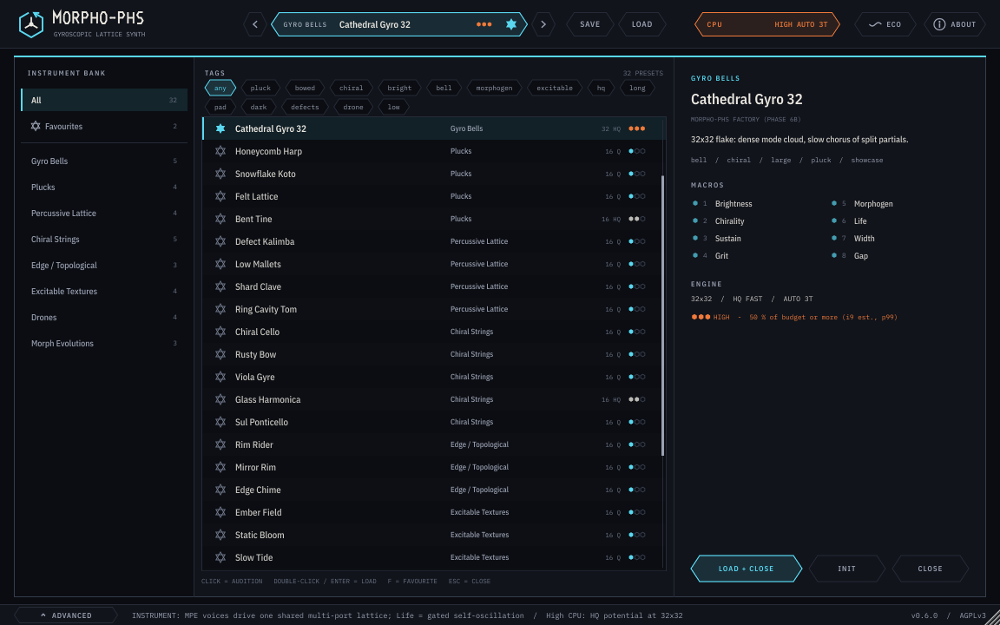
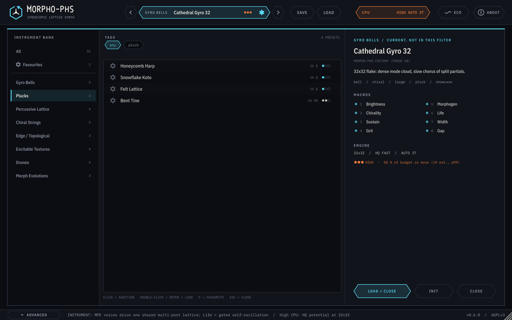
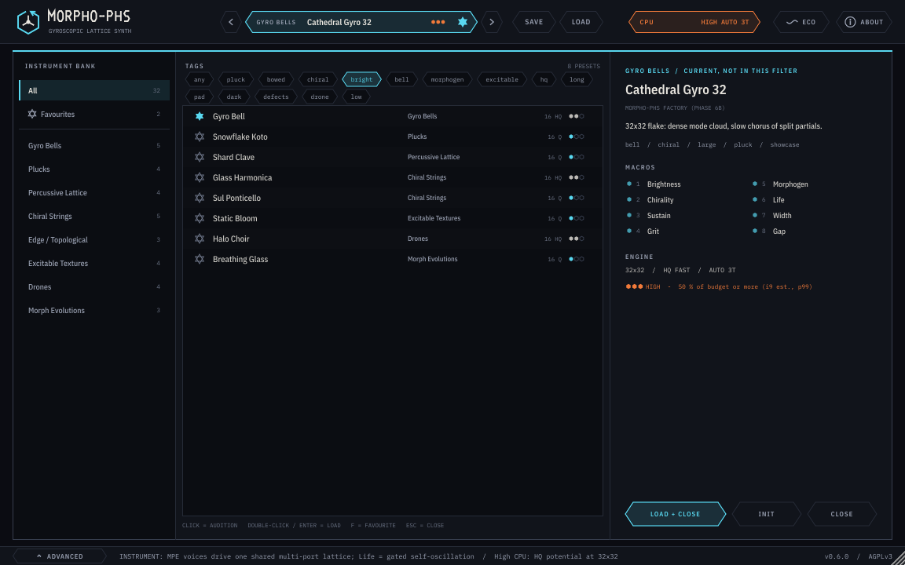
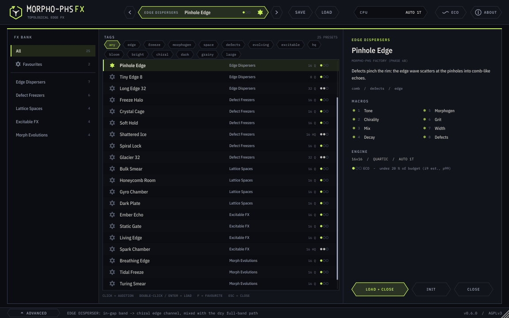
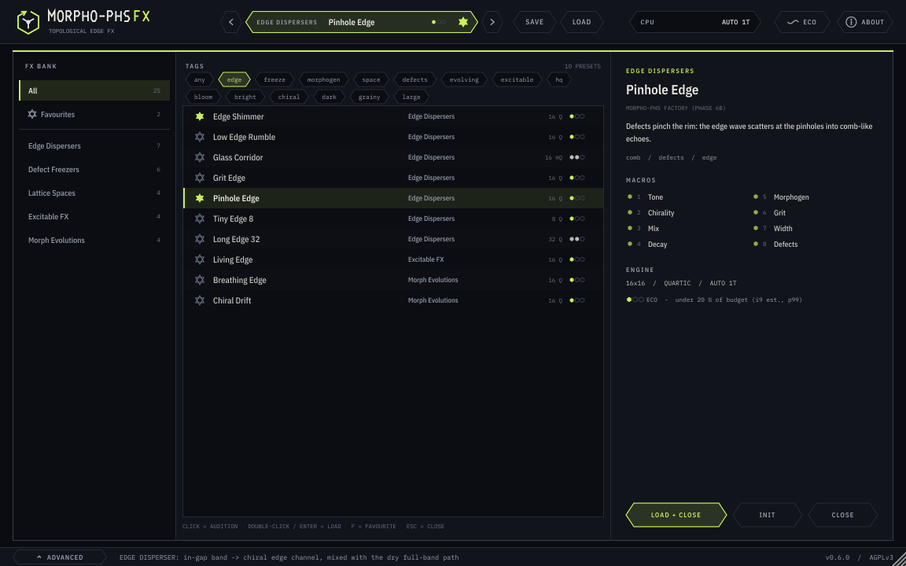
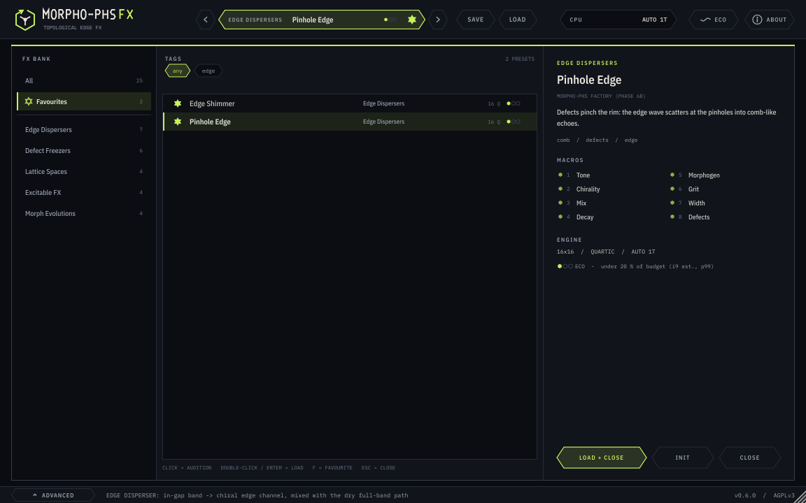
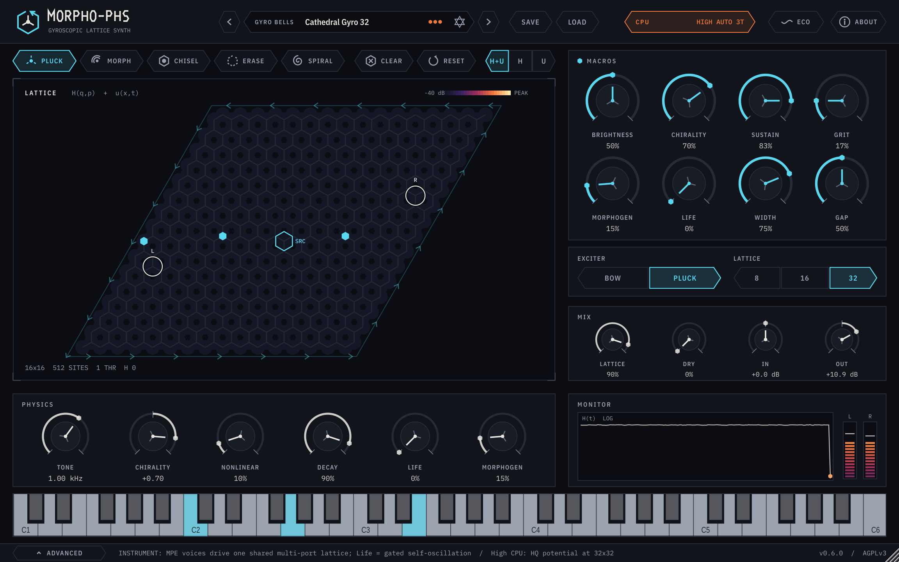
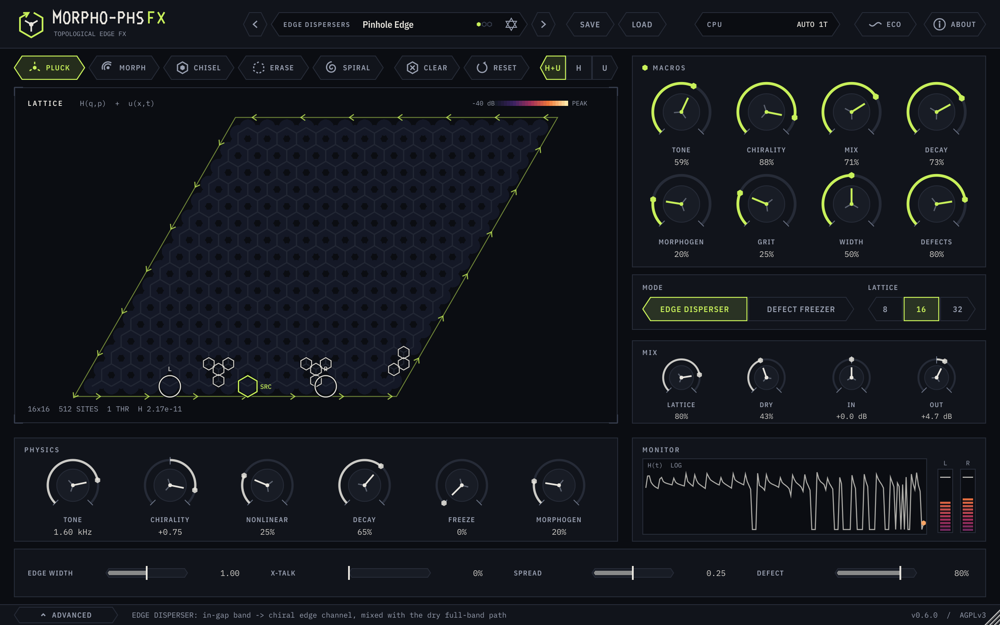

日期：2026-10-31（Asia/Shanghai）· 版本 0.6.0 · 授权 AGPL-3.0-only
docs/phase6/preset_audit.md）。工作环境：所有工作都在 box 上完成，用户的 PC 离线，未被触碰。本阶段没有做网络检索；6a 时的检索也是在 box 的网络上进行的。本项目与 AETHER 及其它 bot 完全隔离。专家给出的数字只当作假设，CPU 等级是从 box 实测换算到 i9 的估算，需要在 i9 上复测。
详细的逐个决定见 docs/phase6/preset_audit.md，证据在 /workspace/p6b/old27/analysis.json（box）。系统性问题：
退役的 2 个：Reverse Edge 等于 Edge Shimmer 的 Chirality 宏；Wide Pickups 与 Edge Shimmer 只差 spread。validate --factory 1 下 27/27 不满足出厂规则（experiments/results/phase6b/validate/validate_factory_retired27.txt）。
每个类别对应 Morphohedra 的一种物理现象。参数先从物理推出，再用测量来校准；没有借用任何商业预设或通用合成器模板。
| 类别 | 物理来源 | 设计要点 |
|---|---|---|
| Gyro Bells | 陀螺手性劈裂简并模态 | 手性越大，拍频越快；32×32 时模态云更密 |
| Plucks / Percussive Lattice | 拨奏激励 + 缺陷局域模 | 拾音点位置决定鼻音感；缺陷行产生类似拇指琴的局域音高 |
| Chiral Strings | 弓擦（锯齿）激励 + 手性 | HQ 势的在位能隙抬高音色；Life 宏推入有界自持 |
| Edge / Topological | 能隙内的单向边缘态 | 边缘通道宽度与串扰作为宏 |
| Excitable Textures / Drones | Barkley 可激介质（形态场） | 亚临界 Life（Hopf 阈值的 0.5–0.75 倍）；螺旋波种子 ⇒ Life = 0 |
| Morph Evolutions | 形态场慢速调制 | 慢 tau，带形态素刺激点 |
| Edge Dispersers（FX） | 输入经能隙内边缘通道色散 | 湿声在前（wet 0.8 / dry ≈0.43） |
| Defect Freezers（FX） | 缺陷 + Freeze（无损） | 默认部分冻结，余音有限；Freeze 宏到 1 才无限保持 |
| Lattice Spaces / Excitable FX | 体模态混响 / 介质触发 | 用作空间与瞬态效果 |
生成器规则（scripts/presets/bank6b.py 断言，validate --factory 1 复查）：
增益拟合：每个预设渲染标准演示后，按目标响度迭代输出增益（fit1–fit5）。最后一轮 iter0 改了 1 个、iter1 改了 0 个，0 个失败。Halo Choir 的 life_frac 从 0.65 降到 0.5，因为原设定在约 5.6 s 后出现宽带噪声底。
完整列表（中英文、宏名与来源）在 presets/PRESET_LIST.md，由 scripts/presets/docs6b.py 自动生成。
NNN_slug.morpho 决定库顺序：乐器 001–032，FX 101–125。| # | 名称 | 标签 | 说明 | 8 个宏 |
|---|---|---|---|---|
| 001 | Gyro Bell | bell, bright, chiral, pluck | 强陀螺耦合的拨奏晶格：简并模态被劈裂，像敲击的钟一样缓慢拍频。 | Brightness · Chirality · Sustain · Grit · Morphogen · Life · Width · Gap |
| 002 | Counter-Spin Bell | bell, chiral, dark, pluck | 手性反向：同一口钟，泛音沿雪花反方向拍动。 | Brightness · Chirality · Sustain · Grit · Morphogen · Life · Width · Gap |
| 003 | Glass Gong | bell, chiral, hq, long, pluck | 宽的在位能隙拉伸泛音列；长而闪烁的锣尾。 | Brightness · Chirality · Sustain · Grit · Morphogen · Life · Width · Gap |
| 004 | Toy Carillon | bell, chiral, eco, pluck, small | 8x8 小雪花：模态少，清晰的非谐和钟声；库里最省 CPU 的钟。 | Brightness · Chirality · Sustain · Grit · Morphogen · Life · Width · Defects |
| 005 | Cathedral Gyro 32 | bell, chiral, large, pluck, showcase | 32x32 大雪花：稠密的模态云，劈裂泛音形成缓慢的合唱。 | Brightness · Chirality · Sustain · Grit · Morphogen · Life · Width · Gap |
| 006 | Honeycomb Harp | pluck, warm | 蜂窝上的柔和拨奏；轻微手性让余音略带旋动。 | Brightness · Chirality · Sustain · Grit · Morphogen · Life · Width · Crosstalk |
| 007 | Snowflake Koto | bright, narrow, pluck | 拾音点贴近中心：鼻音般、类似古筝的起音，随后快速绽开。 | Brightness · Chirality · Sustain · Grit · Morphogen · Life · Width · Crosstalk |
| 008 | Felt Lattice | dark, pluck, soft | 低音调、短衰减：像包了毛毡的闷音拨奏。 | Brightness · Chirality · Sustain · Grit · Morphogen · Life · Width · Crosstalk |
| 009 | Bent Tine | hq, metallic, pluck | HQ 能隙加非线性：像音叉齿的拨奏，振幅衰减时音高随之弯曲。 | Brightness · Chirality · Sustain · Grit · Morphogen · Life · Width · Crosstalk |
| 010 | Defect Kalimba | defects, percussion, tuned | 一排重缺陷把模态困在小腔里：短促、有音高、像拇指琴的敲击。 | Brightness · Chirality · Sustain · Grit · Morphogen · Life · Width · Defects |
| 011 | Low Mallets | defects, low, percussion, wood | 低音调、散布缺陷：带木质感的马林巴式槌击。 | Brightness · Chirality · Sustain · Grit · Morphogen · Life · Width · Defects |
| 012 | Shard Clave | bright, defects, percussion, short | 密集随机缺陷与快速阻尼：干脆、玻璃质、带音高的咔哒声。 | Brightness · Chirality · Sustain · Grit · Morphogen · Life · Width · Defects |
| 013 | Ring Cavity Tom | defects, drum, low, percussion | 缺陷围成的圆环像鼓皮腔体；腔内的声部低沉轰鸣。 | Brightness · Chirality · Sustain · Grit · Morphogen · Life · Width · Defects |
| 014 | Chiral Cello | bowed, low, warm | 弓擦锯齿波穿过低调手性雪花：木质、略带扭转感的大提琴腔体。 | Brightness · Chirality · Sustain · Grit · Morphogen · Life · Width · Crosstalk |
| 015 | Rusty Bow | bowed, dark, grit | 高四次非线性：弓在刮擦，泛音拥挤并发出低吼。 | Brightness · Chirality · Sustain · Grit · Morphogen · Life · Width · Crosstalk |
| 016 | Viola Gyre | bowed, chiral, mid | 中音区；强手性把弓擦音拉成旋转的合唱感。 | Brightness · Chirality · Sustain · Grit · Morphogen · Life · Width · Crosstalk |
| 017 | Glass Harmonica | bowed, bright, glass, hq | HQ 能隙加高音调：湿指摩擦玻璃般纯净，略带不稳定。 | Brightness · Chirality · Sustain · Grit · Morphogen · Life · Width · Gap |
| 018 | Sul Ponticello | bowed, bright, thin | 拾音点外移至边缘：贴近琴码的纤细玻璃质弓音。 | Brightness · Chirality · Sustain · Grit · Morphogen · Life · Width · Crosstalk |
| 019 | Rim Rider | bowed, chiral, edge, wide | 最大手性：弓擦能量沿雪花边缘传播，边缘拾音点听到它绕圈。 | Brightness · Chirality · Sustain · Grit · Morphogen · Life · Width · Crosstalk |
| 020 | Mirror Rim | bowed, chiral, edge | 同一条边缘反向旋转，串扰把两个拾音点折叠在一起。 | Brightness · Chirality · Sustain · Grit · Morphogen · Life · Width · Crosstalk |
| 021 | Edge Chime | bell, chiral, edge, pluck, topological | 满手性拨奏：钟声泛音在衰减时仍沿边缘行进。 | Brightness · Chirality · Sustain · Grit · Morphogen · Life · Width · Defects |
| 022 | Ember Field | excitable, morphogen, pluck, warm | 拨奏激发形态场波，像余烬被短暂扇旺，随后冷却。 | Brightness · Chirality · Sustain · Grit · Morphogen · Life · Width · Defects |
| 023 | Static Bloom | bright, excitable, grainy, morphogen | 快速 Barkley 介质（短 tau）：每个音符后都绽开噼啪作响的颗粒。 | Brightness · Chirality · Sustain · Grit · Morphogen · Life · Width · Defects |
| 024 | Slow Tide | bowed, excitable, morphogen, pad, slow | 慢速介质（长 tau）配合弓擦：音色像潮汐一样涨落。 | Brightness · Chirality · Sustain · Grit · Morphogen · Life · Width · Defects |
| 025 | Nerve Net | excitable, hq, morphogen, pluck, restless | HQ 势加敏感介质：拨奏在雪花上激发神经脉冲般的连发。 | Brightness · Chirality · Sustain · Grit · Morphogen · Life · Width · Gap |
| 026 | Spiral Drone | drone, long, low, pad, spiral | 介质中植入的螺旋波缓慢旋转，扫动弓擦长音的音色。 | Brightness · Chirality · Sustain · Grit · Morphogen · Life · Width · Crosstalk |
| 027 | Low Orbit | dark, drone, long, pad, sub | 极低音调、接近临界的 Life：释放后仍久久不散的厚重低频长音。 | Brightness · Chirality · Sustain · Grit · Morphogen · Life · Width · Crosstalk |
| 028 | Halo Choir | bright, choir, drone, hq, long, pad | HQ 能隙、宽拾音、慢形态场：空灵、带元音感的合唱铺底。 | Brightness · Chirality · Sustain · Grit · Morphogen · Life · Width · Gap |
| 029 | Big Spiral 32 | drone, large, long, pad, showcase, spiral | 32x32 雪花加螺旋种子：缓慢旋转的稠密长音。 | Brightness · Chirality · Sustain · Grit · Morphogen · Life · Width · Gap |
| 030 | Morphogen Tapestry | bowed, evolving, morphogen, slow | 两个形态场源相撞；弓擦音慢慢重新编织泛音。 | Brightness · Chirality · Sustain · Grit · Morphogen · Life · Width · Crosstalk |
| 031 | Turing Bells | bell, evolving, excitable, morphogen | 在植入螺旋的介质上拨奏的钟：每一次敲击落在不同的纹理上。 | Brightness · Chirality · Sustain · Grit · Morphogen · Life · Width · Defects |
| 032 | Breathing Glass | bowed, bright, evolving, excitable, glass, morphogen | 弓擦高音玻璃，其明亮度随介质慢波呼吸。 | Brightness · Chirality · Sustain · Grit · Morphogen · Life · Width · Defects |
| # | 名称 | 标签 | 说明 | 8 个宏 |
|---|---|---|---|---|
| 101 | Edge Shimmer | bright, dispersion, edge | 能隙内频带沿单向手性边缘传播：在干声旁形成明亮、色散的鸣响。 | Tone · Chirality · Mix · Decay · Morphogen · Grit · Width · Crosstalk |
| 102 | Low Edge Rumble | dark, edge, low | 边缘调低：在底鼓与贝斯下方缓慢色散的暗沉低鸣。 | Tone · Chirality · Mix · Decay · Morphogen · Grit · Width · Crosstalk |
| 103 | Glass Corridor | edge, glass, hq | HQ 能隙抬高边缘频带：长而透明的玻璃走廊，尾音高而纯。 | Tone · Chirality · Mix · Decay · Morphogen · Grit · Width · Gap |
| 104 | Grit Edge | drive, edge, grit | 边缘上的四次非线性：瞬态返回时带着颗粒感与音高涂抹。 | Tone · Chirality · Mix · Decay · Morphogen · Grit · Width · Crosstalk |
| 105 | Pinhole Edge | comb, defects, edge | 缺陷夹窄了边缘：边缘波在针孔处散射成梳状回声。 | Tone · Chirality · Mix · Decay · Morphogen · Grit · Width · Defects |
| 106 | Tiny Edge 8 | eco, edge, small | 8x8 小雪花：短边缘、紧凑的边缘回声颤动；最轻量的效果器。 | Tone · Chirality · Mix · Decay · Morphogen · Grit · Width · Crosstalk |
| 107 | Long Edge 32 | edge, large, showcase | 32x32 边缘：路径长四倍，色散被拉成缓慢扫动的尾音。 | Tone · Chirality · Mix · Decay · Morphogen · Grit · Width · Crosstalk |
| 108 | Freeze Halo | defects, freeze, halo | 缺陷环周围的部分冻结：每次敲击后悬停的柔和光晕。 | Tone · Chirality · Mix · Decay · Morphogen · Grit · Width · Freeze |
| 109 | Crystal Cage | cavity, defects, freeze | 重缺陷腔体：冻结的模态被困在腔内，像水晶和弦般鸣响。 | Tone · Chirality · Mix · Decay · Morphogen · Grit · Width · Freeze |
| 110 | Soft Hold | freeze, pad, soft | 无缺陷的轻度冻结：整片雪花维持柔和、模糊的延音。 | Tone · Chirality · Mix · Decay · Morphogen · Grit · Width · Freeze |
| 111 | Shattered Ice | freeze, grainy, hq | 散布缺陷加 HQ：充满颗粒与闪光泛音的冻结场。 | Tone · Chirality · Mix · Decay · Morphogen · Grit · Width · Freeze |
| 112 | Spiral Lock | defects, freeze, spiral | 缺陷沿螺旋臂排布：冻结的音色在消退时向外盘旋。 | Tone · Chirality · Mix · Decay · Morphogen · Grit · Width · Freeze |
| 113 | Glacier 32 | freeze, large, showcase | 32x32 冻结：带一条断层缺陷的巨大、缓慢的冻结模态冰川。 | Tone · Chirality · Mix · Decay · Morphogen · Grit · Width · Freeze |
| 114 | Bulk Smear | dark, smear, space | 低手性体态腔体：短而涂抹的共振，让鼓更厚实。 | Tone · Chirality · Mix · Decay · Morphogen · Grit · Width · Defects |
| 115 | Honeycomb Room | room, space, warm | 中等衰减、宽拾音：把雪花当作一间温暖的小木屋。 | Tone · Chirality · Mix · Decay · Morphogen · Grit · Width · Defects |
| 116 | Gyro Chamber | chiral, space, wide | 体态中的强手性：反射盘旋，立体声像随之旋转。 | Tone · Chirality · Mix · Decay · Morphogen · Grit · Width · Crosstalk |
| 117 | Dark Plate | long, plate, space | 低音调、长衰减：垫在人声或键盘下方的暗色板式混响。 | Tone · Chirality · Mix · Decay · Morphogen · Grit · Width · Defects |
| 118 | Ember Echo | bloom, excitable, morphogen, warm | 敲击扇起形态场波；回声在冷却前会微微变亮。 | Tone · Chirality · Mix · Decay · Morphogen · Grit · Width · Defects |
| 119 | Static Gate | excitable, grainy, morphogen, rhythmic | 快速介质：每个瞬态留下短暂的噼啪声，随后归于寂静。 | Tone · Chirality · Mix · Decay · Morphogen · Grit · Width · Defects |
| 120 | Living Edge | bloom, edge, excitable, morphogen | 接近临界 Life 的边缘色散器：输入之后边缘鸣响会膨胀。 | Tone · Chirality · Mix · Decay · Morphogen · Grit · Width · Crosstalk |
| 121 | Spark Chamber | bright, excitable, hq, morphogen | HQ 体态配敏感介质：瞬态在高频带上迸出火花。 | Tone · Chirality · Mix · Decay · Morphogen · Grit · Width · Gap |
| 122 | Breathing Edge | edge, evolving, morphogen | 形态场波调制边缘阻尼：鸣响自行呼吸。 | Tone · Chirality · Mix · Decay · Morphogen · Grit · Width · Crosstalk |
| 123 | Tidal Freeze | evolving, freeze, slow | 慢速介质调制部分冻结：保持的音像潮水般起落。 | Tone · Chirality · Mix · Decay · Morphogen · Grit · Width · Freeze |
| 124 | Turing Smear | evolving, space, spiral | 介质中旋转的螺旋波带动腔体音色一同旋转。 | Tone · Chirality · Mix · Decay · Morphogen · Grit · Width · Defects |
| 125 | Chiral Drift | chiral, edge, evolving | 形态场直接调制手性：边缘频带在音高与方向上漂移。 | Tone · Chirality · Mix · Decay · Morphogen · Grit · Width · Crosstalk |
方法（scripts/presets/cpu6b.py）：
morpho_cli qa --cost 4 计时（块 128，1500 块）。在 bank 运行里出现 box p99 尖峰的预设，用 10 s 重测（experiments/results/phase6b/cpu/rerun/）。例如 Long Edge 32 在 bank 运行中 box p99 为 0.852，有 11 次超时；两次重测为 0.353 和 0.295，判为 box 虚拟机停顿。
| 配置 | box 中位数 µs | i9 中位数 µs | i9 最差 p99/预算 | 用于 |
|---|---|---|---|---|
| L32 HQ fast 3T | 5.195 | 4.745 | 0.757 | 32×32 HQ fast |
| L32 Quartic 2T | 3.957 | 3.520 | 0.310 | 32×32 FX Quartic |
| L32 Quartic 3T | 3.858 | 3.500 | 0.480 | 32×32 乐器 Quartic |
| L16 1T | 1.478 | 1.635 | 0.145 | 16×16（Quartic / HQ fast）与 8×8 |
结果：eco 43、standard 12、high 2。
所有 32×32 预设都只用 Quartic 或 HQ fast，线程 Auto。HQ exact 只在合成测试里使用，用来检查 L32 回退到 HQ fast（§9）。注意：i9 数字是估算；Phase 5 的比值来自 FX 与乐器的 bench，不同预设的介质 / 缺陷负载会让实际值有几个百分点的偏差。
| # | 名称 | 类别 | 晶格 / 势 / 线程 | box µs/样本 | i9 p99/预算（估算） | CPU | LUFS-I | 真峰值 dBTP | 余音 s | 质心 Hz | 滚降 85 % Hz |
|---|---|---|---|---|---|---|---|---|---|---|---|
| 001 | Gyro Bell | Gyro Bells | 16x16 HQf 1T | 2.86 | 0.280 | standard | -18.1 | -2.9 | 0.55 | 2342 | 3586 |
| 002 | Counter-Spin Bell | Gyro Bells | 16x16 HQf 1T | 2.56 | 0.251 | standard | -18.1 | -4.3 | 0.80 | 543 | 539 |
| 003 | Glass Gong | Gyro Bells | 16x16 HQf 1T | 2.52 | 0.247 | standard | -18.0 | -2.8 | 2.30 | 746 | 1453 |
| 004 | Toy Carillon | Gyro Bells | 8x8 Q 1T | 0.46 | 0.046 | eco | -18.0 | -2.3 | 0.00 | 569 | 656 |
| 005 | Cathedral Gyro 32 | Gyro Bells | 32x32 HQf 3T | 5.88 | 0.856 | high | -18.1 | -3.8 | 4.70 | 408 | 445 |
| 006 | Honeycomb Harp | Plucks | 16x16 Q 1T | 1.48 | 0.145 | eco | -18.0 | -2.0 | 0.00 | 436 | 469 |
| 007 | Snowflake Koto | Plucks | 16x16 Q 1T | 1.46 | 0.143 | eco | -19.7 | -1.2 | 0.00 | 625 | 656 |
| 008 | Felt Lattice | Plucks | 16x16 Q 1T | 1.52 | 0.149 | eco | -20.4 PL | -1.3 | 0.00 | 225 | 258 |
| 009 | Bent Tine | Plucks | 16x16 HQf 1T | 2.52 | 0.247 | standard | -19.2 | -1.2 | 0.00 | 748 | 773 |
| 010 | Defect Kalimba | Percussive Lattice | 16x16 Q 1T | 1.51 | 0.148 | eco | -20.4 PL | -1.3 | 1.70 | 162 | 188 |
| 011 | Low Mallets | Percussive Lattice | 16x16 Q 1T | 1.54 | 0.151 | eco | -23.7 PL | -1.3 | 0.00 | 100 | 164 |
| 012 | Shard Clave | Percussive Lattice | 16x16 Q 1T | 1.48 | 0.145 | eco | -25.9 PL | -1.1 | 0.00 | 367 | 562 |
| 013 | Ring Cavity Tom | Percussive Lattice | 16x16 Q 1T | 1.46 | 0.143 | eco | -20.7 PL | -1.3 | 0.00 | 191 | 258 |
| 014 | Chiral Cello | Chiral Strings | 16x16 Q 1T | 1.57 | 0.154 | eco | -18.0 | -6.5 | 1.00 | 314 | 586 |
| 015 | Rusty Bow | Chiral Strings | 16x16 Q 1T | 1.57 | 0.154 | eco | -19.3 | -1.2 | 0.55 | 357 | 609 |
| 016 | Viola Gyre | Chiral Strings | 16x16 Q 1T | 1.48 | 0.145 | eco | -18.0 | -5.7 | 1.25 | 453 | 797 |
| 017 | Glass Harmonica | Chiral Strings | 16x16 HQf 1T | 2.55 | 0.250 | standard | -18.0 | -5.4 | 2.00 | 2419 | 4102 |
| 018 | Sul Ponticello | Chiral Strings | 16x16 Q 1T | 1.51 | 0.149 | eco | -18.0 | -5.8 | 0.35 | 680 | 773 |
| 019 | Rim Rider | Edge / Topological | 16x16 Q 1T | 1.57 | 0.154 | eco | -18.0 | -3.1 | 4.10 | 556 | 820 |
| 020 | Mirror Rim | Edge / Topological | 16x16 Q 1T | 1.58 | 0.155 | eco | -18.0 | -2.6 | 4.00 | 547 | 867 |
| 021 | Edge Chime | Edge / Topological | 16x16 Q 1T | 1.48 | 0.145 | eco | -19.1 | -1.2 | 3.65 | 369 | 469 |
| 022 | Ember Field | Excitable Textures | 16x16 Q 1T | 1.51 | 0.149 | eco | -18.0 | -3.1 | 2.80 | 402 | 422 |
| 023 | Static Bloom | Excitable Textures | 16x16 Q 1T | 1.59 | 0.156 | eco | -18.0 | -5.8 | 0.85 | 579 | 586 |
| 024 | Slow Tide | Excitable Textures | 16x16 Q 1T | 1.57 | 0.154 | eco | -18.0 | -2.6 | 6.10 | 478 | 914 |
| 025 | Nerve Net | Excitable Textures | 16x16 HQf 1T | 2.67 | 0.262 | standard | -18.0 | -5.5 | 3.10 | 1969 | 3023 |
| 026 | Spiral Drone | Drones | 16x16 Q 1T | 1.57 | 0.154 | eco | -18.0 | -3.2 | 2.75 | 510 | 938 |
| 027 | Low Orbit | Drones | 16x16 Q 1T | 1.56 | 0.153 | eco | -18.0 | -4.3 | 5.70 | 259 | 305 |
| 028 | Halo Choir | Drones | 16x16 HQf 1T | 2.74 | 0.269 | standard | -18.0 | -3.9 | 3.40 | 1192 | 2156 |
| 029 | Big Spiral 32 | Drones | 32x32 HQf 3T | 6.10 | 0.888 | high | -18.0 | -3.3 | 2.65 | 742 | 1172 |
| 030 | Morphogen Tapestry | Morph Evolutions | 16x16 Q 1T | 1.64 | 0.161 | eco | -18.0 | -6.5 | 2.45 | 716 | 1242 |
| 031 | Turing Bells | Morph Evolutions | 16x16 Q 1T | 1.68 | 0.165 | eco | -18.0 | -3.2 | 1.75 | 533 | 680 |
| 032 | Breathing Glass | Morph Evolutions | 16x16 Q 1T | 1.60 | 0.157 | eco | -18.0 | -1.9 | 1.50 | 1097 | 1898 |
| # | 名称 | 类别 | 晶格 / 势 / 线程 | box µs/样本 | i9 p99/预算（估算） | CPU | LUFS-I | 真峰值 dBTP | 余音 s | 质心 Hz | 滚降 85 % Hz |
|---|---|---|---|---|---|---|---|---|---|---|---|
| 101 | Edge Shimmer | Edge Dispersers | 16x16 Q 1T | 1.71 | 0.168 | eco | -21.8 | -1.2 | 0.05 | 483 | 773 |
| 102 | Low Edge Rumble | Edge Dispersers | 16x16 Q 1T | 1.66 | 0.163 | eco | -20.0 | -1.5 | 0.10 | 355 | 469 |
| 103 | Glass Corridor | Edge Dispersers | 16x16 HQf 1T | 2.65 | 0.260 | standard | -21.1 | -1.2 | 0.05 | 367 | 445 |
| 104 | Grit Edge | Edge Dispersers | 16x16 Q 1T | 1.58 | 0.155 | eco | -20.0 | -1.5 | 0.05 | 389 | 539 |
| 105 | Pinhole Edge | Edge Dispersers | 16x16 Q 1T | 1.59 | 0.156 | eco | -20.0 | -1.6 | 0.05 | 487 | 750 |
| 106 | Tiny Edge 8 | Edge Dispersers | 8x8 Q 1T | 0.47 | 0.046 | eco | -20.7 | -1.2 | 0.05 | 504 | 773 |
| 107 | Long Edge 32 | Edge Dispersers | 32x32 Q 2T | 4.30 | 0.337 | standard | -20.0 | -2.3 | 0.05 | 653 | 797 |
| 108 | Freeze Halo | Defect Freezers | 16x16 Q 1T | 1.80 | 0.176 | eco | -20.0 | -7.3 | 4.20 | 532 | 891 |
| 109 | Crystal Cage | Defect Freezers | 16x16 Q 1T | 1.85 | 0.182 | eco | -20.0 | -6.0 | 0.60 | 516 | 867 |
| 110 | Soft Hold | Defect Freezers | 16x16 Q 1T | 1.93 | 0.189 | eco | -20.0 | -6.4 | 1.70 | 423 | 773 |
| 111 | Shattered Ice | Defect Freezers | 16x16 HQf 1T | 2.99 | 0.293 | standard | -20.0 | -6.0 | 1.85 | 1011 | 1570 |
| 112 | Spiral Lock | Defect Freezers | 16x16 Q 1T | 1.68 | 0.165 | eco | -20.0 | -4.6 | 2.70 | 512 | 797 |
| 113 | Glacier 32 | Defect Freezers | 32x32 Q 2T | 4.00 | 0.313 | standard | -20.0 | -6.7 | 4.85 | 495 | 797 |
| 114 | Bulk Smear | Lattice Spaces | 16x16 Q 1T | 1.68 | 0.165 | eco | -20.0 | -1.5 | 0.05 | 375 | 445 |
| 115 | Honeycomb Room | Lattice Spaces | 16x16 Q 1T | 1.63 | 0.160 | eco | -20.0 | -6.4 | 0.20 | 467 | 867 |
| 116 | Gyro Chamber | Lattice Spaces | 16x16 Q 1T | 1.62 | 0.159 | eco | -20.0 | -6.8 | 0.70 | 340 | 352 |
| 117 | Dark Plate | Lattice Spaces | 16x16 Q 1T | 1.64 | 0.161 | eco | -20.0 | -7.8 | 1.20 | 457 | 773 |
| 118 | Ember Echo | Excitable FX | 16x16 Q 1T | 1.71 | 0.168 | eco | -19.9 | -7.8 | 3.25 | 488 | 820 |
| 119 | Static Gate | Excitable FX | 16x16 Q 1T | 1.54 | 0.151 | eco | -20.0 | -8.4 | 0.90 | 1102 | 1570 |
| 120 | Living Edge | Excitable FX | 16x16 Q 1T | 1.60 | 0.157 | eco | -20.0 | -2.0 | 0.05 | 423 | 656 |
| 121 | Spark Chamber | Excitable FX | 16x16 HQf 1T | 2.69 | 0.264 | standard | -20.0 | -8.5 | 1.75 | 1472 | 2203 |
| 122 | Breathing Edge | Morph Evolutions | 16x16 Q 1T | 1.66 | 0.163 | eco | -20.0 | -1.6 | 0.05 | 424 | 539 |
| 123 | Tidal Freeze | Morph Evolutions | 16x16 Q 1T | 1.50 | 0.148 | eco | -20.0 | -8.0 | 2.50 | 772 | 1547 |
| 124 | Turing Smear | Morph Evolutions | 16x16 Q 1T | 1.77 | 0.174 | eco | -20.0 | -5.1 | 0.50 | 598 | 961 |
| 125 | Chiral Drift | Morph Evolutions | 16x16 Q 1T | 1.80 | 0.176 | eco | -20.0 | -2.4 | 0.10 | 502 | 727 |
“PL” = 峰值受限（打击类按峰值归一，见 §5）。余音 = 演奏结束后降到 −60 dBFS 以下所需的时间（0 = 演奏结束前已经衰减完）。
标准演示（合成，无采样，可复现）：
门限（scripts/presets/qa_analyze.py）：
结果：57/57 通过（experiments/results/phase6b/qa/analysis.json）。
| 项目 | 乐器（32） | FX（25） |
|---|---|---|
| LUFS-I（非峰值受限） | −19.7 ~ −18.0 | −21.8 ~ −19.9 |
| 峰值受限 | 5 个：Felt Lattice −20.4、Defect Kalimba −20.4、Ring Cavity Tom −20.7、Low Mallets −23.7、Shard Clave −25.9 | 0 |
| 最大真峰值 | −1.1 dBTP | −1.2 dBTP |
| 最长余音 | 6.1 s | 4.85 s |
| 最大 DC | −137.5 dBFS | −74.2 dBFS |
| 谱质心范围 | 100–2419 Hz | 340–1472 Hz |
| 限幅器 / NaN / 失控 | 0 / 0 / 0 | 0 / 0 / 0 |
每个预设的频谱图在 experiments/results/phase6b/qa/*_spec.png。

最近邻（PCA 前的标准化 5 维空间，timbre_nn.json）的距离中位数为 0.415。最相近的组合：
| 预设 A | 预设 B | 距离 |
|---|---|---|
| Pinhole Edge | Tiny Edge 8 | 0.097 |
| Bulk Smear | Low Edge Rumble | 0.145 |
| Big Spiral 32 | Morphogen Tapestry | 0.147 |
| Mirror Rim | Rim Rider | 0.167 |
| Shattered Ice | Static Gate | 0.169 |
| Edge Shimmer | Pinhole Edge | 0.173 |
| Counter-Spin Bell | Static Bloom | 0.178 |
| Cathedral Gyro 32 | Honeycomb Harp | 0.199 |
局限：边缘色散 FX 在图中聚在一起（右上方）。原因是演示里干声占主导，湿声只有能隙内的窄带，长时间平均的特征差别小。听感上的区别（边缘频带的位置、手性方向、颗粒）需要 6c 听测确认；必要时在 6c 之后把 Pinhole Edge / Tiny Edge 8 拉开，或者合并。
experiments/results/phase6b/demos/NNN_slug.{wav,ogg,mp3}，57 × 3 个文件，共 128 MB。另有分卷 zip，见 §10。demos.json 记录每个文件的响度与真峰值。推荐试听（按测量挑选：在音色图上位置独特、物理特征鲜明。未经人耳评价，6c 会验证）：
| 演示 | 理由 |
|---|---|
005_cathedral_gyro_32 |
32×32 稠密模态云，劈裂泛音形成缓慢合唱；余音 4.7 s；high CPU |
003_glass_gong |
宽的在位能隙拉伸泛音列，长而闪烁的锣尾 |
017_glass_harmonica |
PCA 上的离群点之一：高通量、纯净且略带不稳定；旧版失控，新版已修 |
028_halo_choir |
HQ 能隙 + 宽拾音 + 慢形态场，带元音感的铺底（重调后测量中不再出现噪声底） |
031_turing_bells |
拨奏落在植入螺旋波的介质上，每次敲击的纹理都不同 |
121_spark_chamber |
FX：瞬态在高频带上迸出火花，是 FX 中质心最高的之一 |
备选：111_shattered_ice（冻结颗粒场）、025_nerve_net（神经脉冲式连发）、026_spiral_drone。
实现：plugin/Source/ui/PresetBrowser.{h,cpp}，替代 6a 的下拉框。
userApplicationDataDirectory/MORPHO-PHS/favourites_{inst|fx}.txt（Windows 上是 %APPDATA%）。截图（xvfb 快照工具，experiments/results/phase6b/ui/，选取的放在 reports/phase6b_screens/）：








自我评审（逐张看截图后修改）：
与美术方向一致：哑光体面板与发丝线；强调色只出现在“导通”的元素上，即选中的行、选中的标签、Load 按钮和收藏星。按钮用六角胶囊；收藏符号是六芒星；CPU 等级用六边形点。
仍可改进：
绘制开销（*_paint.json，Hero 晶格，box）：默认尺寸 1x 中位数 1.3 ms、2x 3.2 ms，最大尺寸 2x 6.6 ms。比 6a 报告的 0.8–1.1 / 2.2–2.8 / 4.2–5.3 ms 略高，原因未逐项分解（box 虚拟机波动或标题栏新芯片），浏览器覆盖层本身只在打开时绘制。音频线程契约不变：编辑器隐藏或关闭时快照发布为 0 Hz。
QA 测的是默认宏位置，极端位置的行为留给 6c 和 DAW 人工检查。
全部在 box 上于 19:19–19:28（Asia/Shanghai）完成。日志：/workspace/p6b/regression.log；输出：experiments/results/phase6b/{tests,pluginval,wincheck,validate}/。
| 项目 | 结果 |
|---|---|
test_main、test_mt、test_phase3、test_phase4、test_phase5（含 S5c：L32 HQ-exact → HQ fast 回退、Auto 线程） |
全部 PASS，0 失败 |
压力测试 test_phase5_stress 30 s，种子 1/2/3 |
3/3 PASS（P3 每轮 23989–25008 次启停，每次 < 2 s；P4 148–159 次池切换，无卡死） |
插桩压力测试（-DSTRESS_HOOKS，20 s），种子 1/2/3 |
3/3 PASS（注入 38157–41065 次竞争休眠） |
预设校验 validate presets --factory 1 |
57 个，0 失败 |
check-presets（逐预设载入 / 引擎配置检查 + 合成的 L32 / L16 HQ-exact 用例） |
63 项，0 失败；L32 HQ exact → HQ fast 3T 且有警告，L16 HQ exact 保持 HQ exact 2T |
| 旧 27 个按出厂规则校验（对照） | 27/27 不满足（预期） |
| 声音 QA（§5） | 57/57 通过 |
| pluginval 严格度 10（VST3，xvfb，进程内） | MORPHO-PHS SUCCESS，MORPHO-PHS FX SUCCESS（含 Plugin programs（乐器 32 个、FX 25 个程序，名称全部检查）、编辑器、处理中打开编辑器、状态恢复、参数模糊测试） |
| zig 交叉编译（x86_64-windows-gnu，MinGW）引擎 / 测试 | test_phase5、test_phase4、test_phase5_stress、stress hooks 均 EXIT 0 |
说明：6b 的代码修改都在 JUCE 层，包括 PresetIO、Processor、Editor、浏览器和 CLI。JUCE 8 不支持 MinGW，所以这些文件不能用 zig 检查，要在 PC 上用 MSVC 编译验证（§10）。引擎代码自 5c 以来没有改动。test_mt.cpp 只能在 Linux 上运行，这是 Phase 3 起就有的限制，不在 Windows 检查范围内。
/workspace/phase6_sync/morpho-phs-phase6b-sync.zip。内容是相对 6a 同步包之后状态的新增与修改文件，附 PHASE6B_SYNC_MANIFEST.txt（每个文件的 SHA256）。不含演示音频、QA WAV 和 build。/workspace/phase6_sync/morpho-phs-phase6b-demos.zip，按 15 MB 分卷（.zip.001、.zip.002…），附各分卷与整体的 SHA256。PC 步骤（PC 联网后，PowerShell，项目根目录）：
Get-FileHash -Algorithm SHA256 <文件>），把同步包解压覆盖到项目根目录（包里的顶层目录是 morpho-phs-workspace）。powershell -ExecutionPolicy Bypass -File scripts\windows\apply_phase6b_sync.ps1。zip 不能删除文件，这一步把旧的 presets\NN_*.morpho 移除（副本在 presets\retired\），并检查是否有 57 个新预设。powershell -ExecutionPolicy Bypass -File scripts\windows\build_windows.ps1 -VsPath C:\SDKs\AetherBuildTools -Generator Ninja，可加 -Install。dist\windows\morpho_cli.exe validate presets --factory 1，应为 57 OK、0 错误。tools\pluginval\pluginval.exe --strictness-level 10 --validate-in-process --output-dir logs dist\windows\MORPHO-PHS.vst3，FX 同理。dist\windows\morpho_cli.exe qa presets logs\qa6b --play 8 --tail 8 --cost 4（约 340 MB WAV），把 logs\qa6b\qa.json 发回，即可用 i9 实测替代估算。cmd /c copy /b morpho-phs-phase6b-demos.zip.001+morpho-phs-phase6b-demos.zip.002+…+morpho-phs-phase6b-demos.zip.008 morpho-phs-phase6b-demos.zip（8 个分卷），校验整体 SHA256 后解压。目的：
方法：ITU-R BS.1534-3（MUSHRA），0–100 连续量表，网页工具（如 webMUSHRA，开源），耳机，安静环境。至少 15 名有经验的听者，事后剔除规则按 BS.1534-3：隐藏参考在 ≥ 15 % 的试次中得分 < 90 的听者剔除。
刺激：使用 §5 的标准演示（乐器乐句与 FX 干声输入），截 6–8 s，全部响度对齐到 −23 LUFS-I（播放端统一增益），避免“更响 = 更好”。
实验 A：新旧对比（每个试次 = 一个声音角色，选 10 组新旧对应的预设，如 Glass Harmonica、Halo Choir / Twisted Choir、Spiral Drone、Defect Kalimba、Edge Shimmer、Freeze Halo、Big Spiral 32、Glass Corridor、Chiral Cello、Low Mallets）。条件：
实验 B：配置差异（选 6 个 HQ fast 或 32×32 预设）：参考为原配置；条件为同预设改 Quartic、改 16×16、改 8×8；锚点同上。回答“high CPU 是否换来可闻的质量”，结果用于决定 Auto 档位与 ECO 模式的降级策略。
实验 C：边缘色散 FX 可分辨性（重点）：参考为 Edge Shimmer；条件为 Pinhole Edge、Tiny Edge 8、Low Edge Rumble、Grit Edge、Glass Corridor 和干声。以“与参考的相似度”评分，配合一组 ABX：Pinhole Edge 对 Tiny Edge 8、Low Edge Rumble 对 Bulk Smear，各 16 次，检验 p < 0.05。不可分辨的组合在 6c 之后重做或合并。
分析：每个条件报告中位数和 95 % 置信区间（bootstrap），用 Wilcoxon 符号秩检验并做 Holm 校正，或用线性混合模型（听者为随机效应）。预注册假设：新库中位数 > 旧库中位数，且差值 ≥ 10 分；HQ fast 对 Quartic 的差值 < 5 分时，ECO 模式默认降级为 Quartic。
时长：每位听者约 45 分钟（A 10 试次、B 6 试次、C 1 试次 + ABX），中间休息。
scripts/presets/{bank6b.py, bank6b_measured.json, fit_gain6b.py（增益拟合）, qa_analyze.py, cpu6b.py, make_demos6b.py, timbre_map6b.py, docs6b.py}。presets/NNN_*.morpho（57 个）、presets/PRESET_LIST.md、presets/retired/（旧 27 个，不打包）。plugin/Source/ui/PresetBrowser.{h,cpp}（新）；PresetIO.{h,cpp}、PluginProcessor.{h,cpp}、PluginEditor.{h,cpp}、cli/main.cpp、harness/UiSnapHarness.cpp、plugin/CMakeLists.txt（改）。docs/phase6/preset_audit.md、docs/morpho_preset_spec.md（新字段与出厂规则）、README.md §3.8、scripts/windows/README_WINDOWS.md、scripts/windows/apply_phase6b_sync.ps1。experiments/results/phase6b/，包括 qa/、cpu/、demos/、ui/、tests/、pluginval/、wincheck/、validate/、timbre_map.png、timbre_nn.json 和 bank_summary.json。